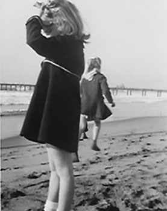
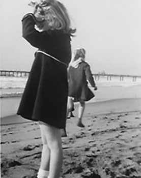

Who
Early
I was born in Omaha, Nebraska, to Gertrude Weskirchen and George Norquist. Both of my parents were first generation city dwellers, almost everyone was born in Nebraska and had ancestors who farmed. The exception was my paternal grandmother who came from Scotland. My mom, the baby of 4 children, was orphaned at age 8 and raised by an aunt who had 12 children of her own. Mom’s sister moved to Omaha, trained as a secretary, got a job, brought mom here and sent her to St. John’s High School. She also had 2 brothers who came as well and they all worked together and made a nice life for themselves. Mom met dad when they both worked at the Fairmont Creamery in Omaha. Mom was Catholic, dad was a divorced protestant. So they were married at the court house and that was that!! My sister and I were raised as Presbyterians until my dad died when I was 11. My dad was an accountant and had a good job. My parents were able to travel and give my sister and I piano and dancing lessons, things many of our friends weren’t privileged to have.


I was born in 1937, an ancient time before technology and even before TV. My first memories are of life on the home front during WWII, when we got all our news on the radio and in the newspaper. Those were days of ration books and shortages, because everything was going into the war effort. Yet it was still a good time to grow up. As children our social life was with other neighborhood children; we roller skated, biked, and played baseball at the vacant lot. We could play outside after dark, a game we loved was witches and ghosts, and we really never got into too much trouble. Most of us used the library frequently and I loved to read, a pastime that I continue this day. As I grew older there were high school get togethers on the riverfront, just harmless fun. After high school, I attended an all girl college where you actually had to go to the library to do research. Unbelievably there was still no tech yet, just tv. There really wasn't much to choose from; a girl could be a teacher, a nurse or a medical technologist, or marry right after graduation. I chose to be a teacher not having a prospective husband yet. I didn’t ace all my classes because there was no pressure to get a 4.0, and to this day I won’t show my transcript to my grandchildren. It really needs to be destroyed!
Career
Now

After college some friends and I moved to Denver, taught school and felt very adult in our own apartments. It was great fun, doing our own laundry and sometimes cooking our own meals, for awhile. Living on our budget was somewhat challenging because even though things were much cheaper, we only made $4000 per year. Eventually I moved back to Omaha, continued teaching, and met the man of my dreams. My husband was “old school”. He didn't want me to work outside the home, so I did just that, I stayed home. My "job" was our two kids, Donna and Georgia. My husband insisted on these names, Donna named after me, and Georgia named after my sister Georgiann and my father George. Those names could lead to a lot of confusion in the family. Rather than being called big Donna or old Donna, I opted for Donna 1. As the kids got a bit older my love of books pointed me to a new career. I returned to school and got certified to be a school librarian. This was what I was born for, helping students find books they loved. I continued this career move until I retired.
My LOVE of books led me to a love of travel. I wanted to see all the places I had read about. Since my husband had passed away, I found a travel buddy in my high school and college friend, Val. We took off!! She and I traveled most of the time for 10 years. We saw western Europe, some stateside places and met people in places I never dreamed I would see. We ventured to China, Cambodia and Egypt, and took a trip down the Danube that I will never forget. Family in the Middle East gave me an opportunity to see Lebanon, UAE and Turkey. I have always been a reader, particularly of fiction stories. Over the years I have accumulated a nice list of must read books. Click on the Book List link below to see a few I highly recommend. The Book Club link below will direct you to some online book club options. They are a great way to engage with readers and read books you wouldn't otherwise.